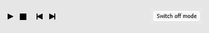
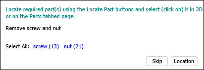

3D 교육 응용 프로그램 - 사용자 인터페이스
이 3D 교육 응용 프로그램을 사용하면 교육 절차를 연구할 수 있습니다. 다음과 같은 세 가지 모드에서 교육 응용 프로그램을 사용할 수 있습니다.
- 데모 모드 – 절차의 자동 재생입니다. 원하는 단계를 다양한 속도로 여러 번 재생하고 다른 각도에서 절차를 검사할 수 있습니다.
- 스터디 모드 – 절차의 대화식 재생입니다. 다양한 힌트를 통해 절차를 실행할 수 있습니다.
- 시험 모드 – 지식을 테스트합니다. 절차는 힌트 없이 실행되어야 합니다.
교육 환경
아래 창에서 적절한 교육 모드를 선택하고 활성화할 수 있습니다.

데모 및 스터디 모드에서는 VCR과 유사한 제어 패널을 사용하여 절차의 재생을 제어할 수 있습니다.

- 재생 단계는 절차의 재생을 시작(중지)합니다.
- 재설정 단계는 현재 단계를 중지하고 처음으로 되감습니다.
- 이전 단계는 재생을 이전 단계로 이동합니다.
- 다음 단계는 재생을 다음 단계로 이동합니다.
- 모드 끄기는 현재 모드를 취소합니다.

- 위치를 사용하면 3D 모델의 적절한 영역으로 카메라를 이동할 수 있습니다.
오퍼레이션 창은 예상 오퍼레이션 또는 오퍼레이션 그룹을 나타냅니다. 요청된 매개변수를 입력하거나 절차에 포함되는 개체를 선택하는 등 지침을 읽고 작업을 수행해야 합니다.

위쪽 창은 절차를 진행하는 데 도움이 됩니다.

- 문서. 현재 활성 절차 단계와 연관된 문서의 부분을 표시합니다.
- 지침. 현재 교육 단계와 연관된 주석을 표시합니다.
- 파트. 현재 교육에서 대화형 개체의 리스트를 표시합니다. 개체의 위치를 찾고 추가 메타 정보를 표시할 수 있습니다.
- 매개변수. 현재 교육에 사용되는 매개변수 리스트를 표시합니다. 이러한 매개변수는 교육 시나리오에서 조건 점프로 사용됩니다. 이러한 매개변수를 입력하라는 메시지가 표시될 수 있습니다.
교육 모드
데모 모드
- 이 모드를 시작하려면 데모 모드를 선택한 다음 모드 활성화를 클릭합니다.
- 재생을 시작하려면 스탭 재생을 클릭합니다. 현재 활성 단계의 설명이 문서 탭 페이지에 표시됩니다.
- 절차가 연속적으로 표시됩니다.
- 재생을 일시적으로 중지하려면 일시 중지를 클릭합니다. 재생을 계속하려면 재생을 클릭합니다.
- 전체 절차에 대한 설명을 표시하려면 문서를 클릭합니다.
- 3D 윈도우에서 탐색할 수 있습니다(이 문서의 3D 윈도우 섹션에서 탐색 참조).
- 파트 탭 페이지를 사용하면 3D 윈도우에서 원하는 파트를 강조 표시하고(찾기 클릭) 추가 정보를 표시할 수 있습니다(meta 클릭).
- 절차의 다음 또는 이전 단계로 이동하려면 다음 단계 또는 이전 단계를 클릭합니다.
- 데모 모드를 종료하려면 모드 끄기를 클릭합니다.
스터디 모드
- 이 모드를 시작하려면 스터디 모드를 선택한 다음 모드 활성화를 클릭합니다.
- 재생 단계를 클릭하여 절차의 스터디를 시작합니다. 오퍼레이션 창에 나타난 지침을 따라야 합니다. 다음과 같은 3가지 그룹의 명령이 있습니다.
- 현재 절차 단계에 포함된 해당 파트를 찾은 다음, 3D 윈도우 또는 파트 탭 페이지에서 해당 파트를 클릭합니다.
- 선택 리스트에서 정답을 선택합니다.
- 매개변수에 대한 값을 지정합니다.
- 건너뛰기 버튼을 사용하면 교육 시나리오에서 다음 오퍼레이션으로 이동할 수 있습니다.
- 테스트 결과는 시각적으로 실수를 나타냅니다(녹색 - 올바름, 빨간색 - 잘못됨). 실수의 수준이 3D 시뮬레이션에서 지정되고 현재 단계에 대해 점차적으로 증가합니다. 각각의 새 단계는 0 실수 수준으로 시작합니다.
- 모든 단계를 완료하고 스터디 모드를 종료할 준비가 될 때마다 모드 끄기를 클릭합니다.
시험 모드
- 이 모드를 시작하려면 시험 모드를 선택한 다음 모드 활성화를 클릭합니다.
- 시작을 클릭하여 테스트를 시작합니다. 여기서는 스터디 모드에서와 동일한 방식으로 작업을 실행해야 하지만 힌트는 더 이상 사용할 수 없습니다.
- 시험 모드를 종료하려면 모드 끄기를 클릭합니다.
3D 윈도우에서 탐색
마우스 또는 탐색 바를 사용하여 3D 윈도우에서 탐색할 수 있습니다.

3D 모델을 확대/축소하려면 다음을 수행합니다.
- 마우스 휠을 사용합니다.
- 또는 탐색 바에서 확대/축소
 을 클릭하고 3D 윈도우의 아무 곳에나 포인터를 놓고 마우스 왼쪽 버튼을 누른 다음 왼쪽 버튼을 누른 상태로 마우스를 움직입니다.
을 클릭하고 3D 윈도우의 아무 곳에나 포인터를 놓고 마우스 왼쪽 버튼을 누른 다음 왼쪽 버튼을 누른 상태로 마우스를 움직입니다.
카메라를 위/아래로 또는 왼쪽/오른쪽으로 이동하려면 다음을 수행합니다.
- 3D 윈도우의 아무 곳에나 포인터를 놓은 다음, 가운데 버튼(또는 마우스 휠) 눌러 마우스를 이동합니다.
- 또는 탐색 바에서 초점 이동
 을 클릭하고 포인터를 3D 위에 놓은 다음, 왼쪽 버튼을 누른 상태로 마우스를 움직입니다.
을 클릭하고 포인터를 3D 위에 놓은 다음, 왼쪽 버튼을 누른 상태로 마우스를 움직입니다.
3D 모델을 3D 윈도우에 완전히 표시하려면 다음을 수행합니다.
- 탐색 바에서 맞추기
 를 클릭합니다.
를 클릭합니다.
3D 모델을 회전하려면 다음을 수행합니다.
- 탐색 바에서 회전
 을 클릭하고 포인터를 3D 모델 위에 놓은 다음, 왼쪽 버튼을 누른 상태로 마우스를 움직입니다.
을 클릭하고 포인터를 3D 모델 위에 놓은 다음, 왼쪽 버튼을 누른 상태로 마우스를 움직입니다.
3D에서 회전 중심을 지정하려면 다음을 수행합니다.
- ALT 키를 누른 다음 3D 윈도우에서 모든 지오메트리를 클릭합니다.
- 또는 3D 윈도우의 지오메트리 위에 포인터를 놓은 다음 마우스 가운데 버튼 또는 마우스 휠을 클릭합니다.
다음 절차 단계(애니메이션)로 이동:
- 현재 애니메이션 건너뛰기
 를 클릭합니다.
를 클릭합니다.
설정
- 속도. 3D 절차에 대한 재생 속도를 설정합니다.
- 시점 동결. 선택된 경우 현재 뷰어 위치가 재생 중에 사용됩니다.
- 알림 메시지 비활성화. 선택된 경우 알림 메시지가 표시되지 않습니다.
- 데모 및 스터디 모드에서 추가로 파트 강조 표시 활성화. 선택한 경우(기본값) 반투명의 깜박이는 구가 교육생의 관심을 끌기 위해 선택한 3D 개체 위에 나타납니다.
- 데모 모드에서 계속 재생. 선택한 경우(기본값) 교육 절차를 중단 없이 재생할 수 있습니다. 선택 해제하면 각 단계 후 재생이 중지됩니다.
- 스터디 모드에서 직접 힌트 활성화. 오퍼레이션 창에 수행해야 할 교육생의 작업에 대한 정보를 표시하거나 숨깁니다. 직접 힌트를 활성화하면 파트 찾기 버튼을 사용하여 파트를 찾을 수 있습니다 (필요한 파트의 이름이 있음). 또한, 직접 힌트가 활성화되면 정확한 답변이 선택 리스트에 표시됩니다.
- 탐색 육면체를 표시합니다. 3D 윈도우에서 탐색 육면체를 표시하거나 숨깁니다. 탐색 육면체에는 세 가지 유형의 핫스팟 영역(모서리, 코너 및 면)이 있습니다. 탐색 육면체의 모서리, 코너 또는 면에 포인터를 놓으면 해당 영역이 강조 표시됩니다. 이러한 영역을 사용하여 표준 뷰 간에 전환하고 회전을 수행할 수 있습니다.
- 곡면 모서리 표시. 선택된 경우 3D 윈도우에서 곡면 경계의 디스플레이를 활성화합니다.
- 앤티앨리어싱. 3D 윈도우에서 왜곡 아티팩트를 최소화하는 기법을 활성화합니다.
- 앰비언트 오클루전. 3D 윈도우에서 주변 폐색 음영처리 및 렌더링 기법을 활성화합니다.
- 호버링된 개체 윤곽선 그리기. 선택 영역의 윤곽선이 그려집니다.